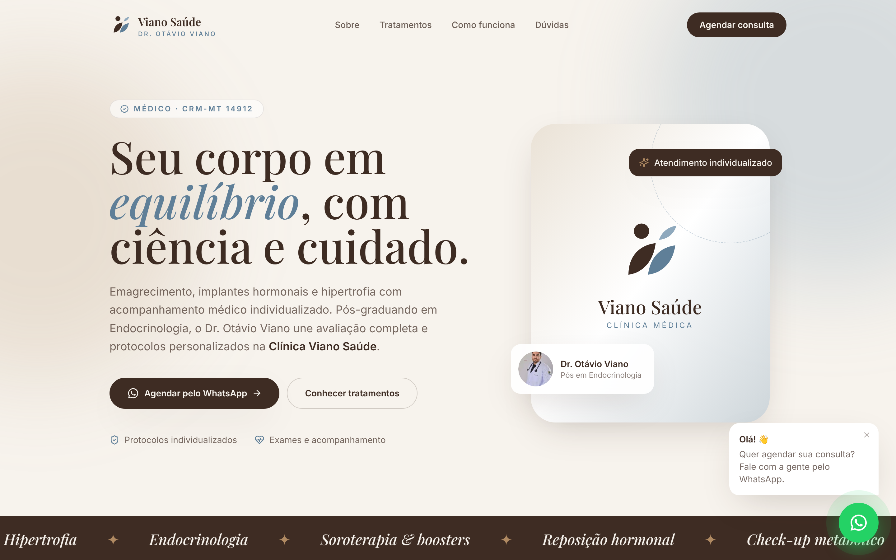
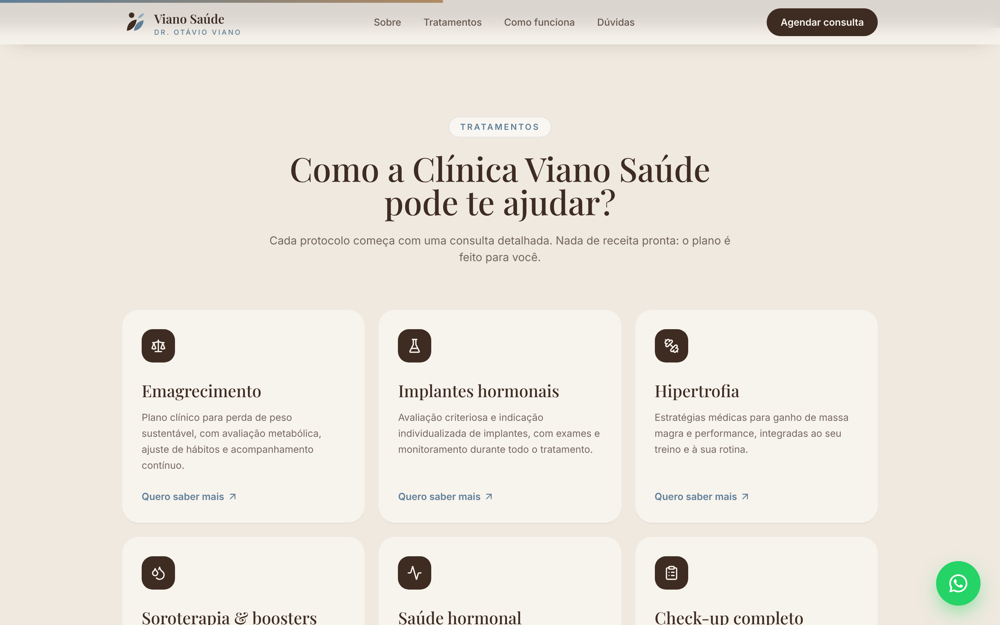
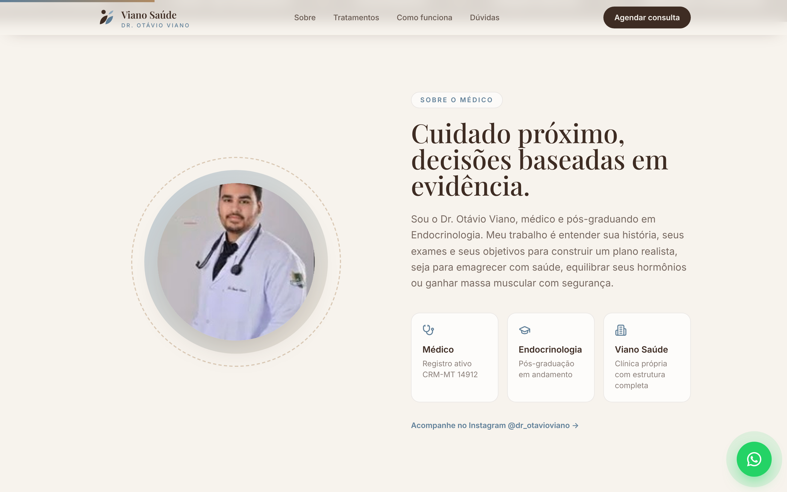
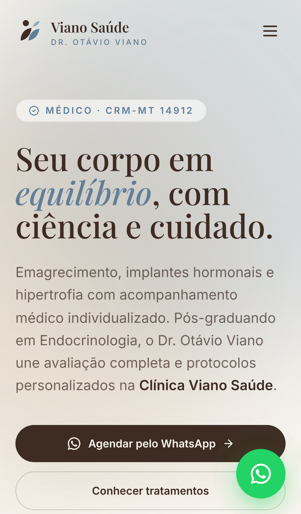
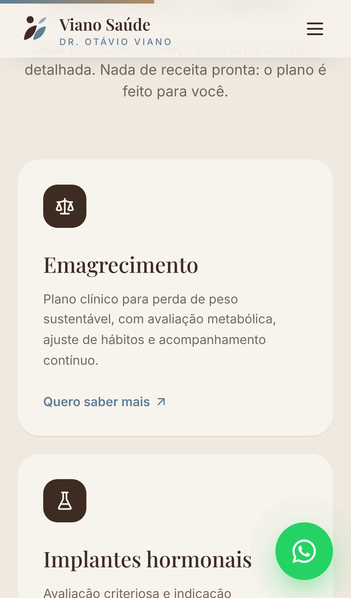

Um site rápido, elegante e pronto para transformar buscas no Google e visitas do Instagram em consultas agendadas pelo WhatsApp.

O Instagram do Dr. Otávio já cumpre bem o papel de relacionamento: são mais de 3.400 seguidores e 130+ publicações. Mas quem ainda não o conhece não procura no Instagram. Procura no Google, com buscas como “médico para emagrecer”, “implante hormonal perto de mim” ou “endocrinologista em MT”. Hoje, nessas buscas, a clínica simplesmente não aparece.
O site preenche essa lacuna e funciona como a vitrine oficial: passa credibilidade (CRM, formação, estrutura), explica cada tratamento e leva o paciente direto ao WhatsApp, já com uma mensagem pronta.
Indexação no Google, palavras-chave dos tratamentos e perfil no Google Maps.
Visual alinhado à identidade da Viano Saúde, CRM em destaque e informações claras.
Botão flutuante de WhatsApp em todas as telas e mensagens específicas por tratamento.
Paleta, tipografia e símbolo foram inspirados nas artes que a clínica já publica (tons creme, marrom e azul acinzentado, folhas). Assim, quem chega do Instagram reconhece a marca na hora.
Desenvolvemos uma versão funcional para o senhor navegar antes de decidir. Abra no celular e no computador:
Endereço provisório, apenas para avaliação. Na entrega final, o site é publicado no domínio definitivo da clínica.




| SEO local | Conteúdo otimizado para buscas como “emagrecimento + cidade”, “implante hormonal + MT”. Tráfego gratuito e contínuo no médio prazo. |
| Google Ads (pesquisa) | Anúncios para quem já está procurando o tratamento, segmentados por raio a partir da clínica e por horário de atendimento. |
| Google Maps | Perfil completo da clínica com fotos, horários e avaliações: é o que aparece primeiro em buscas “perto de mim”. |
| Instagram → site | Bio, destaques e stories levando ao site. O conteúdo que já é produzido passa a gerar agendamentos. |
| Remarketing | Anúncios para quem visitou o site e não chamou no WhatsApp. |
| Ofertas sazonais | Espaço para campanhas como a “Oferta Relâmpago” já usada no Instagram, com página e link próprios. |
Toda a comunicação segue as regras de publicidade médica do CFM (Resolução CFM nº 2.336/2023): sem promessa de resultado e com CRM sempre visível.
Pagamento único
Sem taxa mensal pelo site.
Pequenos ajustes (textos, telefone, horários, fotos, preços, novos tratamentos na lista) são feitos sem custo, a qualquer momento. Apenas grandes alterações, como novas páginas, redesign ou sistemas novos, são orçadas à parte.
O valor investido em anúncios no Google Ads é definido pela clínica e pago diretamente ao Google. O domínio próprio (ex.: vianosaude.com.br) é registrado em nome da clínica, por cerca de R$ 40/ano.
Basta responder esta proposta para começarmos.